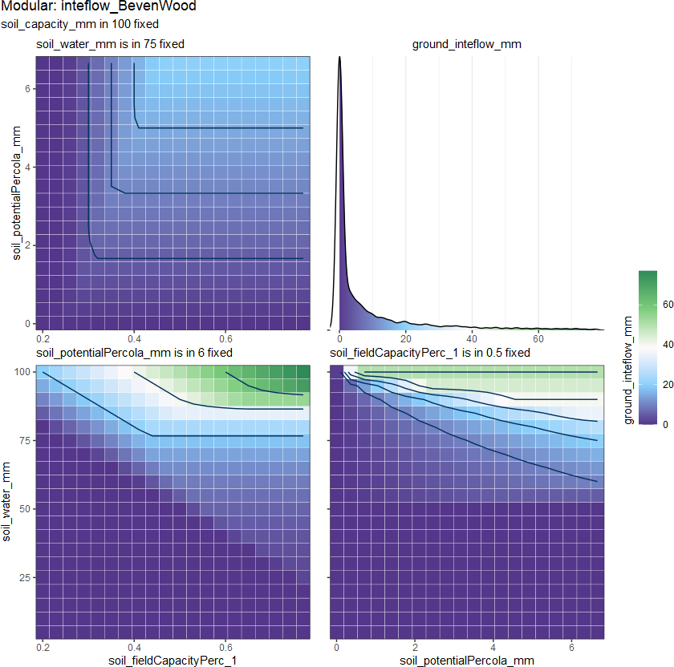
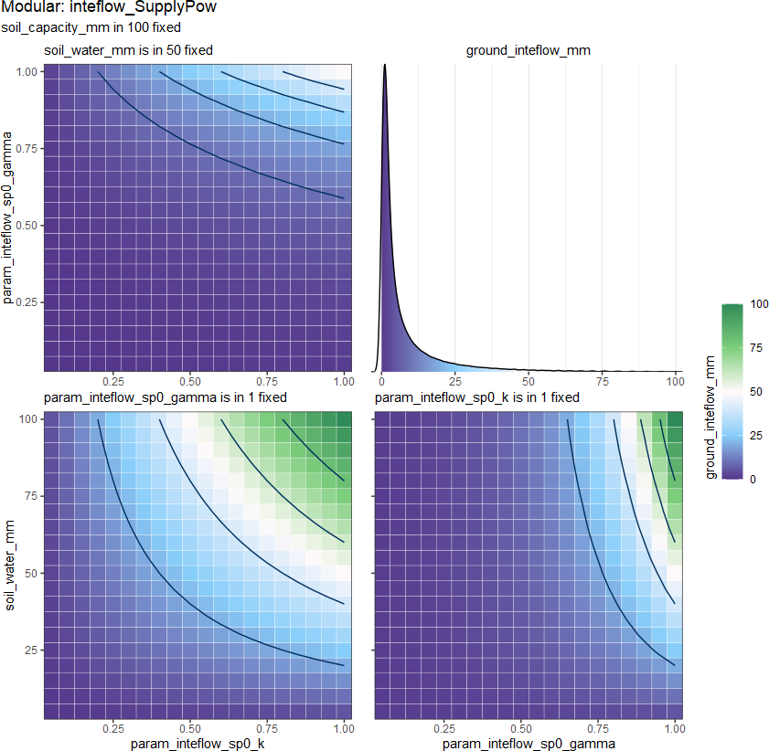

interflow
inteflow.RdIn hydrological modeling, interflow refers to the movement of water that is transported horizontally through the soil or aquifer. Like baseflow, the impact of other RUs (response units) on the route to the river will be ignored.
It can be calculated by the water in the soil layer \(W_{soil}\), which can also be tread as the part of the \(W_{soil}\).
So we can give the function from:
\[F_{itfl} = f_{inteflow}(D_{grnd}, D_{soil})\]
to:
\[F_{itfl} = f_{inteflow}(W_{soil}, C_{soil}, ...) = k^* W_{soil}\] \[F_{itfl} \leq W_{soil}\]
where
\(F_{itfl}\) is
soil_inteflow_mm\(W_{soil}\) is
water_soil_mm\(C_{soil}\) is
capacity_soil_mm\(k^*\) is estimated ratio
The output density distribution from 8 methods:

inteflow_GR4Jfix(
soil_water_mm,
soil_capacity_mm,
param_inteflow_grf_k,
param_inteflow_grf_gamma
)
inteflow_MaxPow(
soil_water_mm,
soil_capacity_mm,
soil_potentialInteflow_mm,
param_inteflow_map_gamma
)
inteflow_ThreshPow(
soil_water_mm,
soil_capacity_mm,
soil_potentialInteflow_mm,
param_inteflow_thp_thresh,
param_inteflow_thp_gamma
)
inteflow_Arno(
soil_water_mm,
soil_capacity_mm,
soil_potentialInteflow_mm,
param_inteflow_arn_thresh,
param_inteflow_arn_k
)
inteflow_BevenWood(
soil_water_mm,
soil_capacity_mm,
soil_fieldCapacityPerc_1,
soil_potentialInteflow_mm
)
inteflow_SupplyPow0(
soil_water_mm,
param_inteflow_sp0_k,
param_inteflow_sp0_gamma
)
inteflow_SupplyPow(
soil_water_mm,
soil_capacity_mm,
param_inteflow_sup_k,
param_inteflow_sup_gamma
)
inteflow_SupplyRatio(soil_water_mm, param_inteflow_sur_k)Arguments
- soil_water_mm
(mm/m2) water volume in
soilLy- soil_capacity_mm
(mm/m2) average soil Capacity (maximal storage capacity)
- param_inteflow_grf_k
<0.01, 1> coefficient parameter for
inteflow_GR4Jfix()- param_inteflow_grf_gamma
<2, 7> exponential parameter for
baseflow_GR4Jfix()- soil_potentialInteflow_mm
<0.01, 7> (mm/m2/TS) potential interflow
- param_inteflow_map_gamma
<0.1, 5> exponential parameter for
inteflow_MaxPow()- param_inteflow_thp_thresh
<0.1, 0.9> coefficient parameter for
inteflow_ThreshPow()- param_inteflow_thp_gamma
<0.1, 5> exponential parameter for
inteflow_ThreshPow()- param_inteflow_arn_thresh
<0.1, 0.9> coefficient parameter for
inteflow_ThreshPow()- param_inteflow_arn_k
<0.1, 1> exponential parameter for
inteflow_ThreshPow()- soil_fieldCapacityPerc_1
<0, 1> the relative ratio (\(\theta_fc / \theta^*\)) that the water content can drainage by gravity
- param_inteflow_sp0_k
<0.01, 1> coefficient parameter for
inteflow_SupplyPow0()- param_inteflow_sp0_gamma
<0, 1> exponential parameter for
inteflow_SupplyPow0()- param_inteflow_sup_k
<0.01, 1> coefficient parameter for
inteflow_SupplyPow()- param_inteflow_sup_gamma
<0, 7> parameter for
inteflow_SupplyPow()- param_inteflow_sur_k
<0.01, 1> coefficient parameter for
inteflow_SupplyRatio()
Value
inteflow_mm (mm/m2)
_GR4Jfix (Perrin et al. 2003) :

\[k^* = 1 - \left[ 1 + \left(k \frac{W_{soil}}{C_{soil}} \right)^\gamma \right]^{-1/\gamma}\] where
\(k\) is
param_inteflow_grf_k\(\gamma\) is
param_baseflow_grf_gamma
_MaxPow:

\[F_{itfl} = M_{itfl} \left(\frac{W_{soil}}{C_{soil}} \right)^\gamma\] where
\(M_{itfl}\) is
soil_potentialInteflow_mm\(\gamma\) is
param_inteflow_map_gamma
_ThreshPow

based on the _MaxPow and add the one threshold \(\phi_b\):
\[F_{itfl} = 0, \quad \frac{W_{soil}}{C_{soil}} < \phi_b\]
\[F_{itfl} = M_{itfl} \left(\frac{\frac{W_{soil}}{C_{soil}} - \phi_b}{1-\phi_b} \right)^\gamma, \quad \frac{W_{soil}}{C_{soil}} \geq \phi_b\]
where
\(\phi_b\) is
param_inteflow_thp_thresh\(\gamma\) is
param_inteflow_thp_gamma
_Arno (Franchini and Pacciani 1991; Liang et al. 1994)

has also in two cases divided by a threshold water content \(\phi_b\):
(This method is actually not the original method, but an analogy with inteflow_Arno)
\[F_{itfl} = k M_{itfl} \frac{W_{soil}}{C_{soil}}, \quad \frac{W_{soil}}{C_{soil}} < \phi_b\]
\[F_{itfl} = k M_{itfl} \frac{W_{soil}}{C_{soil}} + (1-k) M_{itfl} \left(\frac{W_{soil} - W_s}{C_{soil} - W_s} \right)^2, \quad \frac{W_{soil}}{C_{soil}} \geq \phi_b\]
\[W_s = k C_{soil}\]
where
\(\phi_b\) is
param_inteflow_arn_thresh\(k\) is
param_inteflow_arn_k
_BevenWood (Beven and Wood 1983; Beven et al. 1995) :

\[k = \frac{W_{soil}}{C_{soil} - W_{soil}} \quad {\rm and} \quad k \leq 1\] \[F_{itfl} = k M_{itfl}\] where
\(k_{fc}\) is
soil_fieldCapacityPerc_1\(\gamma\) is
param_inteflow_sup_gamma
_SupplyPow0:

\[F_{base} = k(W_{grnd})^\gamma\] where
\(k\) is
param_inteflow_sup_k\(\gamma\) is
param_inteflow_sup_gamma
_SupplyPow:

\[k^* = k \left(\frac{W_{soil}}{C_{soil}} \right)^\gamma\] where
\(k\) is
param_inteflow_sup_k\(\gamma\) is
param_inteflow_sup_gamma
_SupplyRatio:

\[k^* = k\] where
\(k\) is
param_inteflow_sur_k
References
Beven K, Lamb R, Quinn P, Romanowicz R, Freer J (1995).
“TOPMODEL.”
Computer models of watershed hydrology., 627--668.
Beven K, Wood EF (1983).
“Catchment Geomorphology and the Dynamics of Runoff Contributing Areas.”
Journal of Hydrology, 65(1), 139--158.
ISSN 0022-1694, doi: 10.1016/0022-1694(83)90214-7
.
Franchini M, Pacciani M (1991).
“Comparative Analysis of Several Conceptual Rainfall-Runoff Models.”
Journal of Hydrology, 122(1), 161--219.
ISSN 0022-1694, doi: 10.1016/0022-1694(91)90178-K
.
Liang X, Lettenmaier D, Wood E, Burges S (1994).
“A Simple Hydrologically Based Model of Land Surface Water and Energy Fluxes for GSMs.”
J. Geophys. Res., 99.
doi: 10.1029/94JD00483
.
Perrin C, Michel C, Andr攼㸹assian V (2003).
“Improvement of a Parsimonious Model for Streamflow Simulation.”
Journal of Hydrology, 279(1-4), 275--289.
ISSN 00221694, doi: 10.1016/S0022-1694(03)00225-7
.